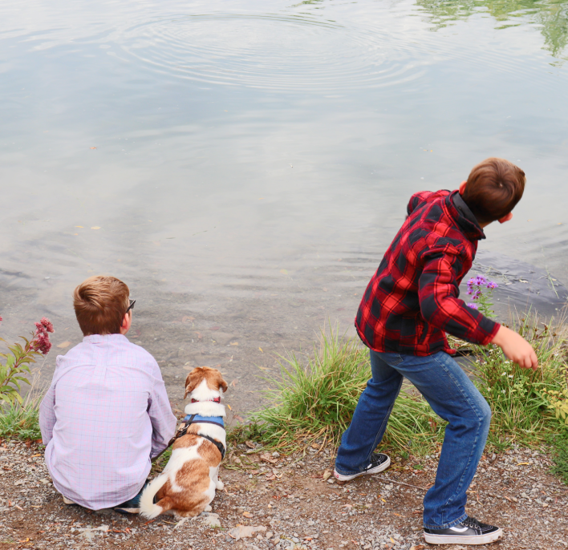

"A Day on the water"
This photo was taken On merit island around a year and a half ago during a photography project in which the goal was to take varying types of photographs. The reason why this photograph holds some significance to me is it, in addition to being a capsule of the times, it also holds a good moment with my family and cousins. The day that this was taken we had also traveled around the island for a significant hike for the better part of the day, ocassionally stoping to relax and take photo’s but the time spent together before coming to this point is what makes photo so significant.